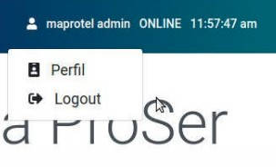
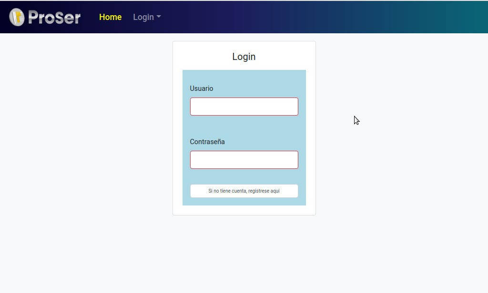
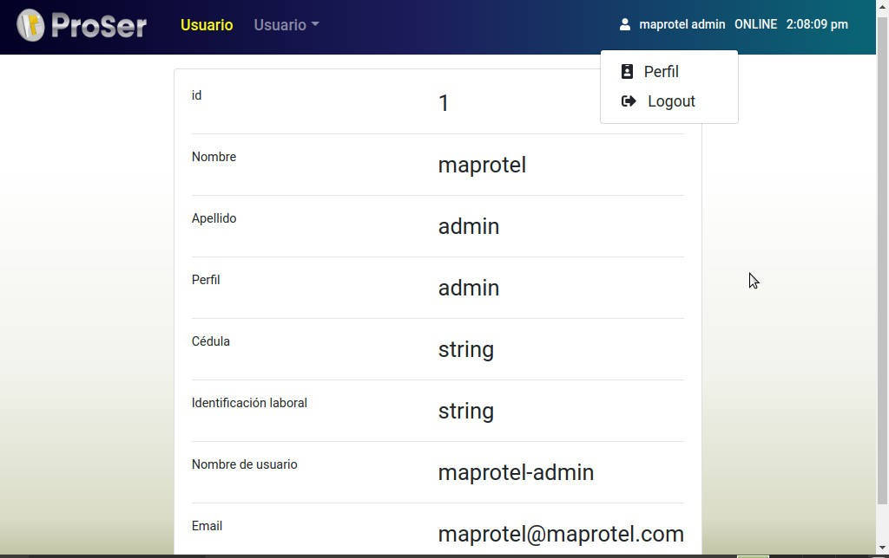

Usuario
A través de la sección de Usuario, las personas tendrán acceso al perfil de información del usuario que le corresponde y a la posibilidad de cerrar la sesión del sistema.
Logout
Para cerrar su cuenta de usuario en el sistema de ProSer tiene habilitados dos métodos para realizar esa función, el primero es mediante el Módulo de Usuario y el segundo es presionando en el Menú Superior.
Menú superior
El menú superior se encuentra ubicado en la parte superior de la ventana y dentro de él podemos divisar: el logo de ProSer, el nombre del módulo, las opciones de las vistas que conforman el módulo, el nombre del usuario, el estado de conexión y la hora actual.
Como se hizo mención anteriormente puede usted realizar este proceso en cualquier módulo para ello debe:
- Presionar el menú superior en la parte derecha en donde esta el nombre del usuario, el estatus y la hora, como se muestra en la siguiente imagen:

- Luego de cerrar tu sesión aparece la misma página principal de inicio de ProSer con solo la opción de Login.

También puede realizar esta función ingresando en el Módulo de Usuario en la Sección Logout y presionando esa función usted cierra su sesión de la manera exitosa.
Perfil
Este módulo como bien lo indica su nombre sirve para visualizar la data relacionada a los usuario que utilizan la reportería de ProSer, en el cual el usuario puede contemplar el siguiente contenido:
Menú superior
El menú superior se encuentra ubicado en la parte superior de la ventana y dentro de él podemos divisar: el logo de ProSer, el nombre del módulo, las opciones de las vistas que conforman el módulo, el nombre del usuario, el estado de conexión y la hora actual.
Ahora bien en lo que se refiere a la funcionalidad de este módulo como pudo notar en la imagen anexada cuenta con dos secciones para realizar tareas.
Al presionar la sección de Perfil el usuario habilita la siguiente vista

En esta sección se especifican los datos correspondientes al usuario que está utilizando ProSer identificando campos como:
-
Id: Número de identificación que corresponde al momento en que su usuario fue creado.
-
Nombre: Nombre del Usuario.
-
Apellido: Apellido del usuario.
-
Perfil: Muestra el tipo de perfil.
-
Cédula: Muestra el número de cédula del usuario.
-
Identificación laboral: Muestra el número de identificación interno del usuario.
-
Email: Muestra el gmail correspondiente del usuario con el cual se está usando lacuenta de ProSer.